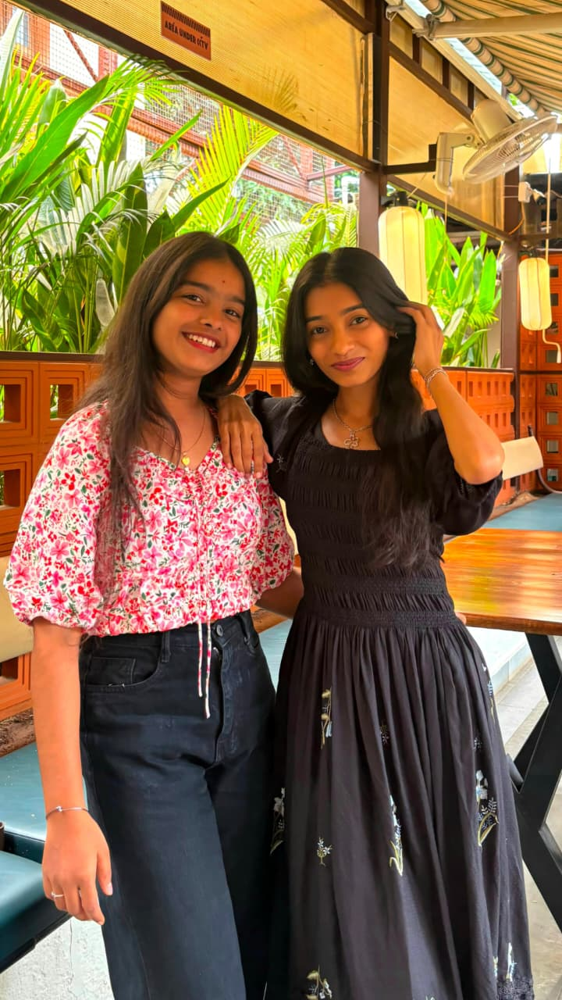
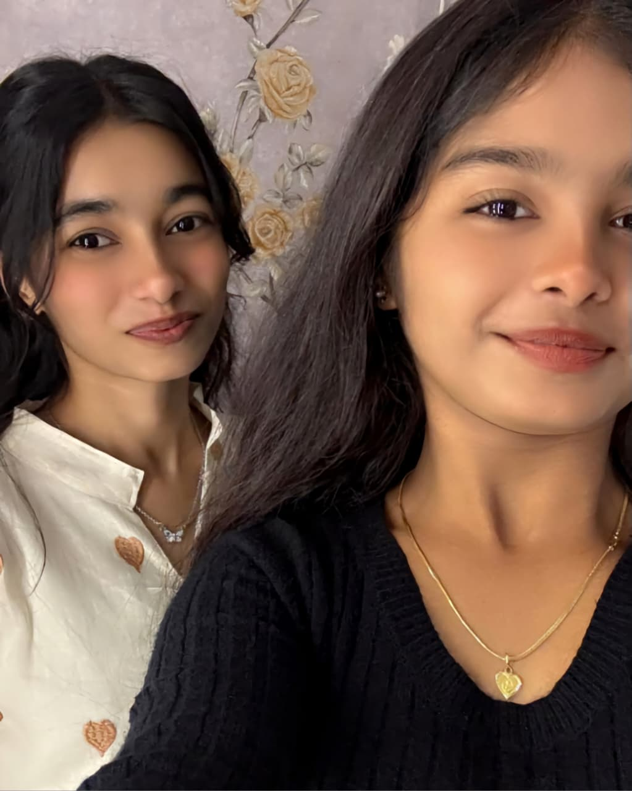
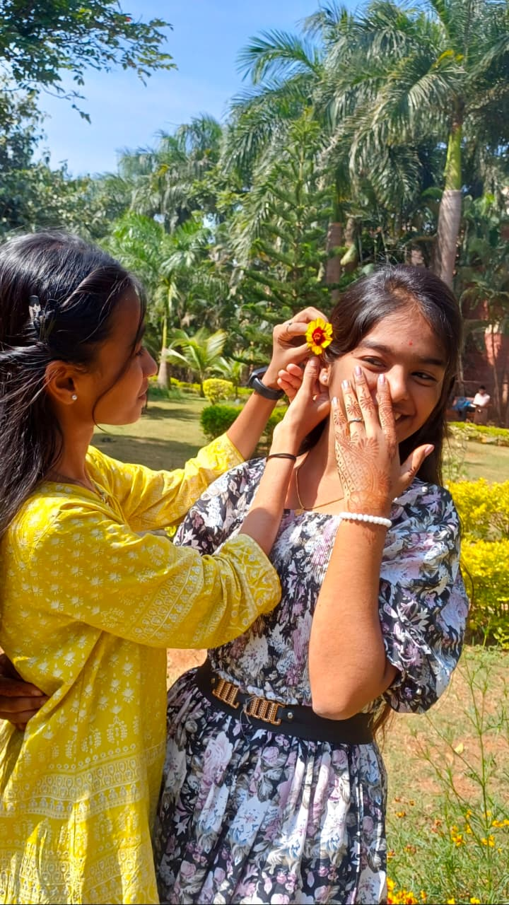
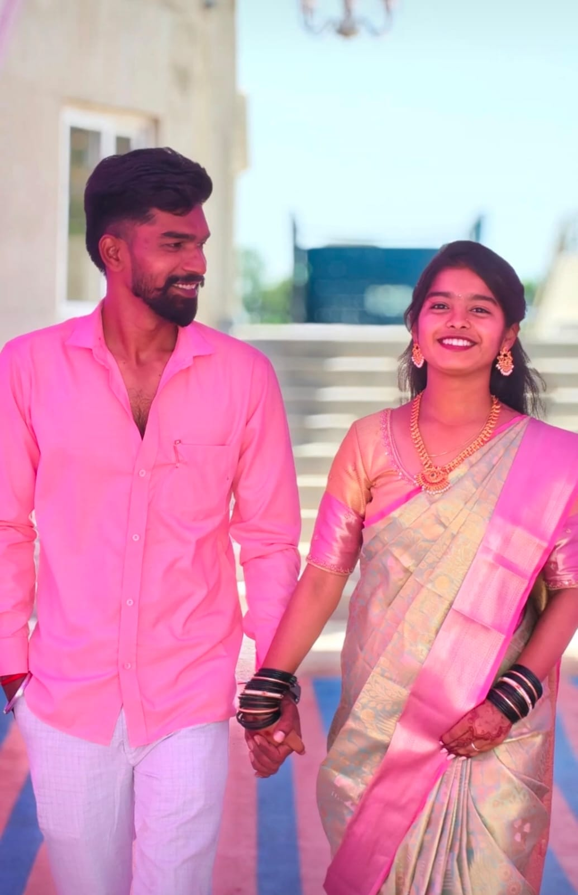

This letter is ONLY for youuu!
I made a little surprise for you...
And I hope you like it!!...
Eight beautiful years of friendship, and when I look back, it all takes me to our school days. Funny how we never planned to become best friends. We never knew that we would become such an important part of each other's lives. It all started with those inter-school long-jump competitions. You were the only girl who stood beside me during my long practice sessions, cheering me on, encouraging me to jump higher, and even coming along to support me during my competition. But that little support became the beginning of something so beautiful friendship story. Slowly, we became closer, and before we knew it, we had shared almost everything. Our food, our laughter, our sadness, our silly fights, our tears, our judgments about others (haha!), and countless little moments that became our favourite memories. We literally grew together! Then came the day we signed off from school and stepped into college together. And guess what? Even there, our friendship had its own routine! Waiting for each other before entering the first class, calling each other, "Come soon, the class is going to start!", "Where are you?", "Hurry up, the bus will leave!" Those little everyday moments might have looked ordinary to everyone else, but today they are some of the memories I would happily live again. And now here we are, in our degree days, studying in different colleges and living different routines, yet somehow still close to each other. Of course, our friendship hasn't always been perfect. There was a phase when misunderstandings and distance came between us. If I could, I would erase that distance and misunderstanding days chapter from our friendship memories. Sometimes I still regret saying that rather than staying silent,I should have spoken up, held your hand and told you that you were going wrong. I wish I had handled some things differently. But if there is one thing I know, it's that those difficult moments never erased the eight beautiful years we shared. And there is one memory I can never forget. The day I saw you at your father's funeral. I honestly didn't know what to say or how to make things better. Seeing you so broken and knowing that I couldn't take away your pain made me feel helpless. All I could do was stand beside you. Maybe I don't know every little thing you went through during that time, and maybe I couldn't do everything I wished I could. But I hope you felt that you weren't alone, and I hope my presence gave you even a little strength. and YUP!!! **MY VINNI IS GETTING MARRIED!! 🥹❤️ From that little schoolgirl who cheered for me during my long-jump practice to the beautiful bride beginning a new chapter of her life, look how far we have come! and i still remember the days where we used to see jewel,saree shops and all saying each other we will shop here for my marriage.. and now,FINALLY YOU ARE AT THAT STAGE, I wish you fully loaded happiness. I hope your new journey is filled with endless love, respect, laughter, understanding and all the beautiful things you deserve. I hope you always keep smiling, keep being yourself and never forget how special you are. You are not just someone I met in school. You are a part of eight years of my life, a part of my growing-up memories, and someone I will always be thankful to have met. **Thank you for being a part of my story.** No matter how busy life gets, how far we go, or how many new chapters begin, those eight years will always have their own special place and continue... And one last thing... Today, I am not just giving away my friend's hand to someone.I am watching my friend begin a beautiful new journey, and I heavenly happier for you. **HAPPY MARRIED LIFE, MY SWEETY!! 💍❤️** With all my love, From, Your forever school-time to furture partner. 💗
Some moments deserve to be remembered forever!
<


Every picture has a story of its own ❤️

May your new journey be filled with endless happiness, love, laughter and beautiful memories. Wishing you both a lifetime of togetherness!
Life may take us through different journeys, but the memories we created will always stay close to my heart. Be happy,be safe.... and i am ready to hear you anytime you need!!
Lots of love, always and forever. ❤️